Ning's Photos at Devil's Lake, WI

July 2002
These are the photos that Ning took on our trip at Devil's Lake on 12 July 2002. She is a pretty (good) photographer, check out her webpage for more.
Note: the comments are mine.
Click the thumbnails to see the larger images. Each image is about 285 kB, in JPEG format, with a resolution of 1280x960 landscapes, and symmetrically similar for portraits.
| 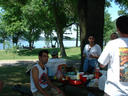
Photo # 1
At the picnic table on the South side: Kyle, Irene, Maleeha, Maleeha's grandfather, Mihai. |
Photo # 2
At the picnic table on the South side: Kyle, Maleeha, Maleeha's grandfather, Ina, Mihai. | 
Photo # 3
At the picnic table on the South side: Irene, Maleeha's grandfather, Maleeha, Stephen, Danielle, Ning, Kyle, Mihai. |
|
Photo # 4
The South shore. |
Photo # 5
On the Potholes trail: Ina, Maleeha's grandfather, Mihai. |
Photo # 6
On the Potholes trail: Ina, Maleeha's grandfather, Mihai. |
|
Photo # 7
On the Potholes trail: Irene, Maleeha. |
Photo # 8
On the Potholes trail: Danielle "rock-climbing". |
Photo # 9
On the Potholes trail: Kyle, Stephen rock-climbing. |
|
Photo # 10
On the Potholes trail: Stephen, Kyle rock-climbing. |
Photo # 11
On the Potholes trail: Ning. |
Photo # 12
On the Potholes trail: Danielle. |
| 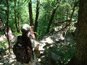
Photo # 13
On the Potholes trail: Ina, Irene, Danielle. |
Photo # 14
On the Potholes trail: Ina. |
Photo # 15
On the East Bluff trail: an eagle soaring over the lake. |
| 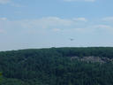
Photo # 16
On the East Bluff trail: an eagle soaring over the lake. | 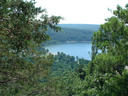
Photo # 17
On the East Bluff trail: view of the South shore. | 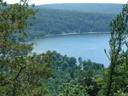
Photo # 18
On the East Bluff trail: view of the South shore. |
|
Photo # 19
On the East Bluff trail. |
Photo # 20
On the East Bluff trail: Ina. |
Photo # 21
On the East Bluff trail: Devil's Doorway. |
|
Photo # 22
On the East Bluff trail, at Devil's Doorway: Mihai. |
Photo # 23
On the East Bluff trail, at Devil's Doorway: Ina. |
Photo # 24
On the East Bluff trail, view of South shore from Devil's Doorway. |
|
Photo # 25
On the East Bluff trail, at Devil's Doorway: crazy rock-climber next to Devil's Doorway. | 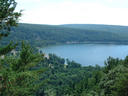
Photo # 26
On the East Bluff trail, view of South shore from Devil's Doorway. |
Photo # 27
On the East Bluff trail, view of the South half of the lake. |

Photo # 28
On the East Bluff trail, view of the middle of the lake. |
Photo # 29
On the East Bluff trail, view of the North half of the lake. |
Photo # 30
On the East Bluff trail: Irene. |

Photo # 31
On the East Bluff trail, view of the South half of the lake. | 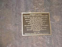
Photo # 32
Sign at the entrace to Parfrey's Glen. | 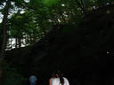
Photo # 33
Walking towards Parfrey's Glen: Danielle, Maleeha. |
| 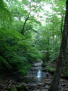
Photo # 34
Waterfall at the very top of Parfrey's Glen. |
Photo # 35
Heart of Parfrey's Glen. | 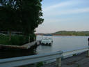
Photo # 36
At the ferry crossing of the Wisconsin river. |
| 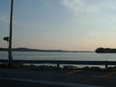
Photo # 37
On the way to Madison, somewhere in Wisconsin. |
Photo # 38
Sunset over Wisconsin river, from the ferryboat. |
Photo # 39
Crossing the Wisconsin river on the ferry. |

Photo # 40
Crossing the Wisconsin river on the ferry. |
Photo # 41
Crossing the Wisconsin river on the ferry. |
Photo # 42
Crossing the Wisconsin river on the ferry: Irene, Ina, Kyle, Stephen. |
|
Photo # 43
Crossing the Wisconsin river on the ferry: Kyle, Irene, Ina, Stephen. |
Photo # 44
Crossing the Wisconsin river on the ferry: Mihai, Maleeha's grandfather, Maleeha. |
Photo # 45
Crossing the Wisconsin river on the ferry: Kyle, Danielle, Irene discussing the finer points of icecream. |
|
Photo # 46
Crossing the Wisconsin river on the ferry. |
{kind=link}
{kind=link}
{kind=link}
{kind=link}
{kind=link}
{kind=link}
{kind=link}
{kind=link}
{kind=link}
{kind=link}
{kind=link}
{kind=link}
{kind=link}
{kind=link}
{kind=link}
{kind=link}
{kind=link}
{kind=link}
{kind=link}
{kind=link}
{kind=link}
{kind=link}
{kind=link}
{kind=link}
{kind=link}
{kind=link}
{kind=link}
{kind=link}
{kind=link}
{kind=link}
{kind=link}
{kind=link}
{kind=link}
{kind=link}
{kind=link}
{kind=link}
{kind=link}
{kind=link}
{kind=link}
{kind=link}
{kind=link}
{kind=link}